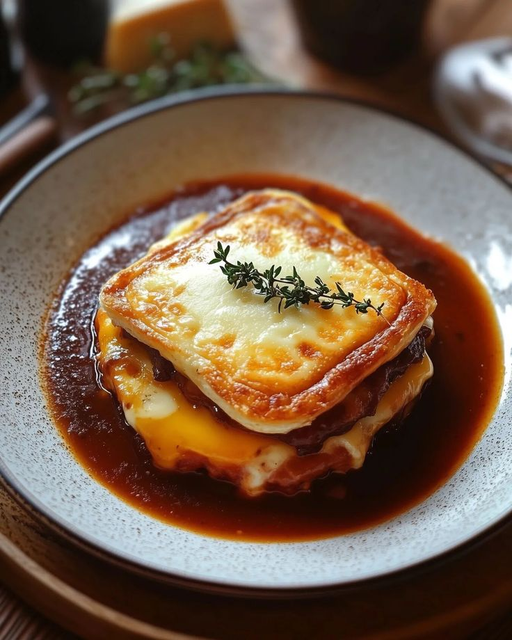

FRANCESINHA

DESCRIPTION:
Francesinha is a Portuguese sandwich that is made with layers of bread and assorted meats, such as steak, ham, and sausage. The sandwich is then covered in a rich tomato and beer sauce and topped with melted cheese. It is often served with french fries.
The Francesinha is a popular dish in Portugal, and it is especially popular in the city of Porto. It is a hearty and flavorful sandwich that is perfect for a cold day.
INGREDIENTS:
- For the Sandwich:
- Thick slices of white bread
- Thin steak (beef)
- Smoked sausage (linguiça)
- Fresh sausage (salsicha fresca)
- Ham
- Cheese (Flamengo or a similar mild, melty cheese)
- Egg (optional)
- French fries (for serving)
- For the Sauce:
- Onion
- Garlic
- Olive oil
- Bay leaves
- Bacon or pork fat
- Tomato sauce
- Fresh chili or chili flakes
- Lager beer
- White wine
- Brandy
- Port wine
- Meat or chicken stock
- Milk
- All-purpose flour
- Salt and pepper
STEPS:
- Prepare the Sauce:
- Chop the onion and garlic. Sauté them in olive oil with bay leaves and bacon or pork fat.
- Add tomato sauce and chili. Bring to a boil.
- Pour in white wine and season with salt and pepper.
- Add lager, brandy, port, and stock. Cook for 30 minutes.
- Mix milk and flour, then add to the sauce to thicken it.
- Remove bay leaves and blend the sauce until smooth.
- Prepare the Sandwich:
- Cook the sausages and steak.
- Toast the bread slices.
- Assemble the sandwich: bread, cheese, ham, steak, sausages, and top with another bread slice.
- Top the sandwich with more cheese.
- Finish and Serve:
- Melt the cheese under a broiler or in the oven.
- Fry the egg (optional) and place it on top of the sandwich.
- Pour the hot sauce over the sandwich.
- Serve immediately with french fries.
Important Notes:
- The sauce recipe can vary, and some recipes include additional ingredients like Worcestershire sauce or oxtail soup mix.
- The specific types of sausages used can also vary depending on regional preferences.
- The Francesinha is traditionally served with a generous amount of sauce, and it's common to dip the sandwich and fries
in the sauce.
Enjoy your homemade Francesinha!
HOME PAGE